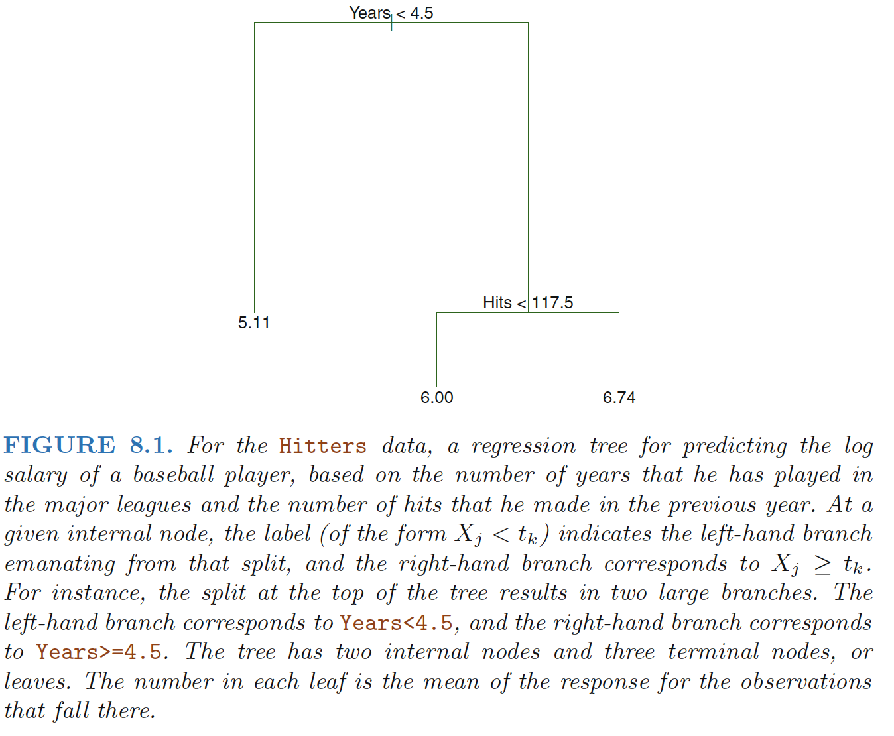
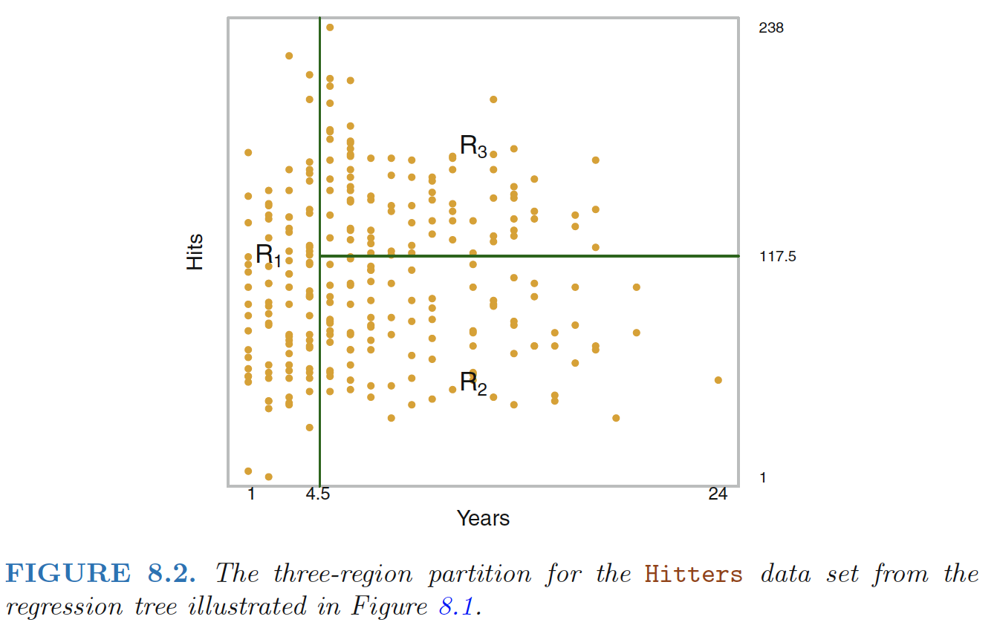
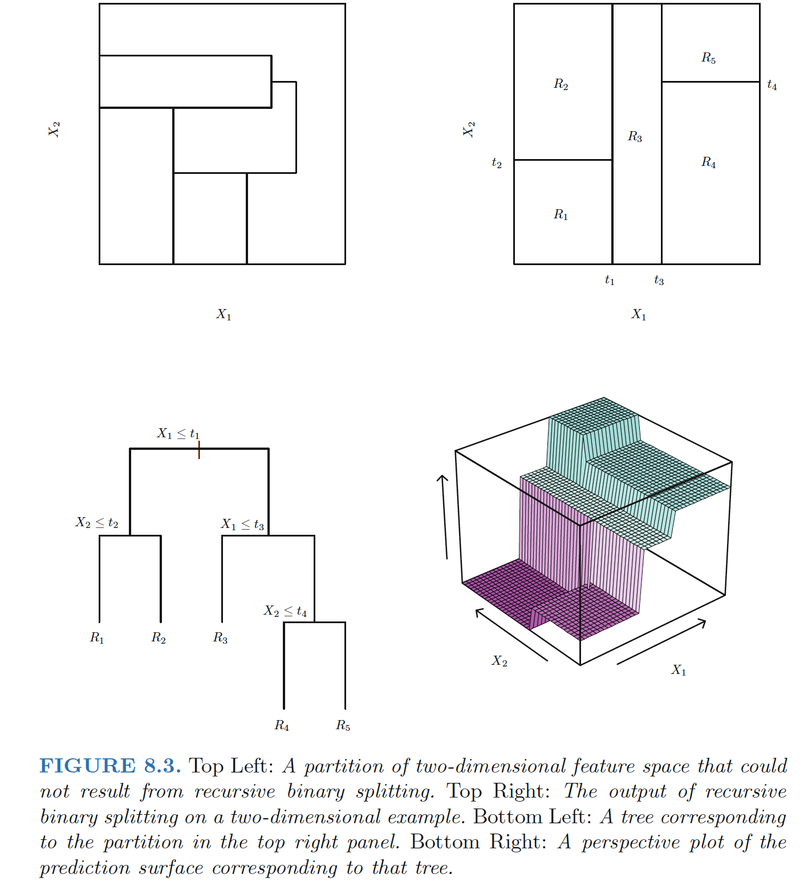
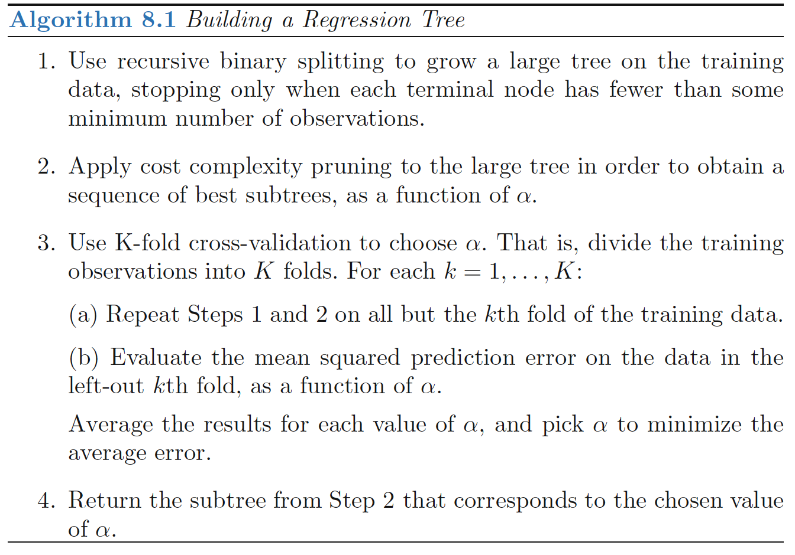
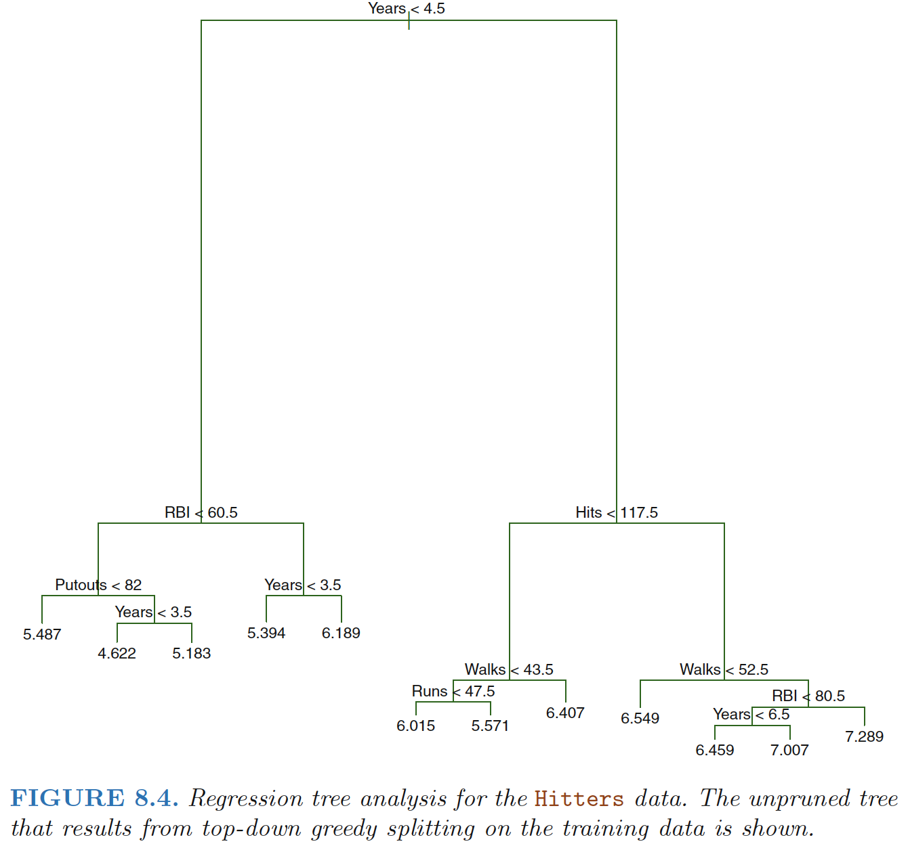
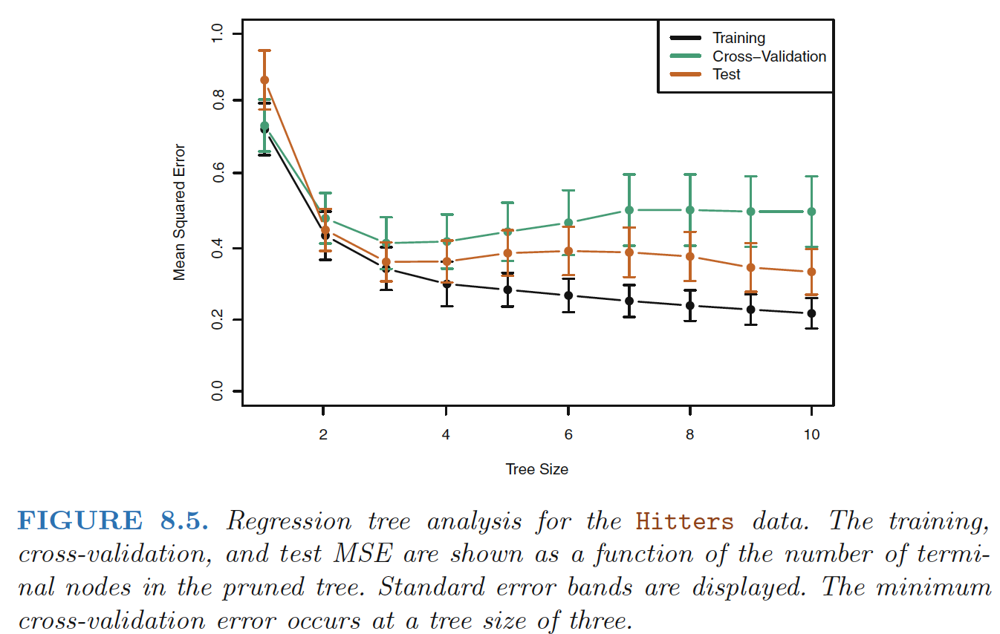
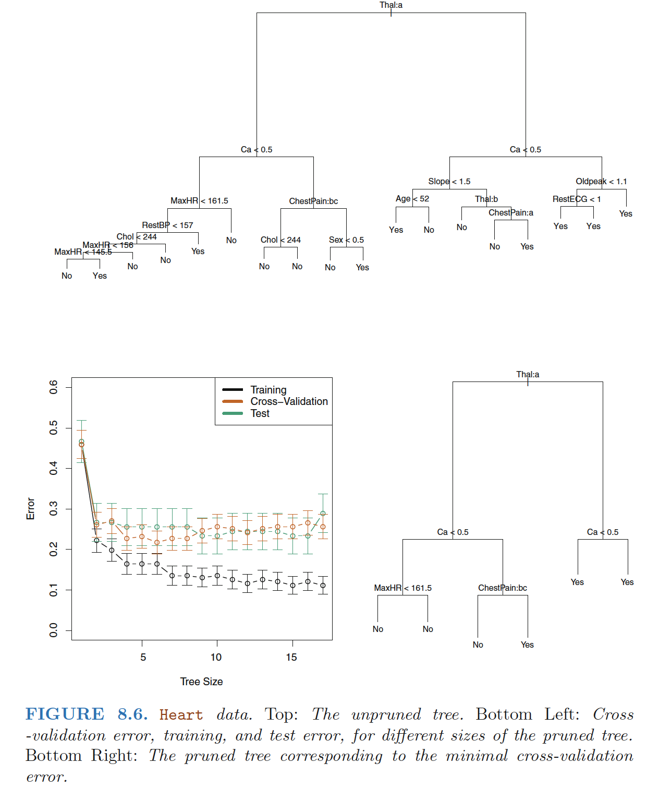

Regression Trees
Predicting Baseball Players’ Salaries Using Regression Trees
 
Terminal nodes: The regions R1, R2, and R3 are known as terminal nodes or leaves of the tree.
Internal nodes: The points along the tree where the predictor space is split are referred to as internal nodes.
Branches: The segments of the trees that connect the nodes as branches
Prediction via Stratification of the Feature Space
Process of building a regression tree
Step 1: We divide the predictor space—that is, the set of possible values for X1,X2, . . .,Xp—into J distinct and non-overlapping regions, R1,R2, . . . , RJ .
Step 2: For every observation that falls into the region Rj, we make the same prediction, which is simply the mean of the response values for the training observations in Rj .
Step 1
How do we construct the regions R1, . . .,RJ? - We choose to divide the predictor space into high-dimensional rectangles, or boxes, for ease of interpretation of the resulting predictive model.
- The goal is to find boxes R1, . . . , RJ that minimize the RSS, given by \[\begin{align} \sum_{j=1}^J\sum_{i \in R_j} (y_i-\hat{y}_{R_j})^2 \end{align}\] where \(\hat{y}_{R_j}\) is the mean response for the training observations within the jth box.
Recursive Binary Splitting
Recursive Binary Splitting: a top-down, greedy approach - Top-down: begins at the top of the tree (at which point all observations belong to a single region) and then successively splits the predictor space; each split is indicated via two new branches further down on the tree. - Greedy: at each step of the tree-building process, the best split is made at that particular step, rather than looking ahead and picking a split that will lead to a better tree in some future step.
Methods: 1. Select the predictor \(X_j\) and the cutpoint \(s\) such that splitting the predictor space into the regions \({X|X_j < s}\) and \({X|X_j ≥ s}\) leads to the greatest possible reduction in RSS - In greater detail, for any \(j\) and \(s\), we define the pair of half-planes \[\begin{align} R_1(j, s) = {X|X_j < s} ,\quad R_2(j, s) = {X|X_j ≥ s} \end{align}\] and we seek the value of \(j\) and \(s\) that minimize the equation \[\begin{align} \sum_{:x_i \in R_1(j,s)}(y_i-\hat{y}_{R_1})^2+\sum_{:x_i \in R_2(j,s)}(y_i-\hat{y}_{R_2})^2 \end{align}\] where \(\hat{y}_{R_1}\)is the mean response for the training observations in \(R_1(j, s)\),
- Repeat the process, looking for the best predictor and best cutpoint in order to split the data further so as to minimize the RSS within each of the resulting regions.
However, this time, instead of splitting the entire predictor space, we split one of the two previously identified regions.
We now have three regions. Again, we look to split one of these three regions further, so as to minimize the RSS.
- The process continues until a stopping criterion is reached; for instance, we may continue until no region contains more than five observations.

Step 2
Predict the response for a given test observation using the mean of the training observations in the region to which that test observation belongs.
Tree Pruning
A better strategy is to grow a very large tree \(T_0\), and then prune it back in order to obtain a subtree
Cost complexity pruning
a.k.a.: weakest link pruning
Consider a sequence of trees indexed by a nonnegative tuning parameter α

For each value of α there corresponds a subtree \(T ⊂ T_0\) such that
\[\begin{align} \sum_{m=1}^T\sum_{i:x_i \in R_m}(y_i − \hat{y}_{R_m})^2 + \alpha|T| \quad \quad (8.4) \end{align}\]
is as small as possible.
- \(|T|\): the number of terminal nodes of the tree T ,
- \(R_m\): the rectangle (i.e. the subset of predictor space) corresponding to the m-th terminal node,
- \(\hat{y}_{R_m}\): the predicted response associated with \(R_m\)—that is, the mean of the training observations in \(R_m\).
The tuning parameter \(α\) controls a trade-off between the subtree’s complexity and its fit to the training data. When α = 0, then the subtree T will simply equal T0, because then (8.4) just measures the training error. However, as α increases, there is a price to pay for having a tree with many terminal nodes, and so the quantity (8.4) will tend to be minimized for a smaller subtree.
Equation 8.4 is reminiscent of the lasso, in which a similar formulation was used in order to control the complexity of a linear model.
 
Classification Trees
For a classification tree, - We predict that each observation belongs to the most commonly occurring class of training observations in the region to which it belongs. - RSS cannot be used as a criterion for making the binary splits \(\Rightarrow\) classification error rate.
Classification Error Rate
- Since we plan to assign an observation in a given region to the most commonly occurring class of training observations in that region, the classification error rate is simply the fraction of the training observations in that region that do not belong to the most common class:
\[\begin{align} E=1-\max_k(\hat{p}_{mk}) \end{align}\]
- \(\hat{p}_{mk}\) : the proportion of training observations in the mth region that are from the kth class.
- classification error is not sufficiently sensitive for tree-growing, and in practice two other measures are preferable: Gini index, cross-entropy.
Gini index
\[\begin{align} G=\sum_{k=1}^K\hat{p}_{mk}(1-\hat{p}_{mk}) \end{align}\]
- A measure of total variance across the K classes. It is not hard to see that the Gini index takes on a small value if all of the \(\hat{p}_{mk}\)’s are close to zero or one.
- For this reason the Gini index is referred to as a measure of node purity—a small value indicates that a node contains predominantly observations from a single class.
Cross-Entropy
\[\begin{align} D=-\sum_{k=1}^K\hat{p}_{mk}\log{\hat{p}_{mk}} \end{align}\]
- Since 0 ≤ \(\hat{p}_{mk}\) ≤ 1, it follows that \(0 ≤ −\hat{p}_{mk}\log{\hat{p}_{mk}}\).
- Cross-entropy will take on a value near zero if the \(\hat{p}_{mk}\)’s are all near zero or near one. Therefore, like the Gini index, the cross-entropy will take on a small value if the mth node is pure.
Cross-Entropy v.s. Gini index v.s. Classification Error Rate - When building a classification tree, either the Gini index or the crossentropy are typically used to evaluate the quality of a particular split, since these two approaches are more sensitive to node purity than is the classification error rate. Any of these three approaches might be used when pruning the tree, but the classification error rate is preferable if prediction accuracy of the final pruned tree is the goal.

- A surprising characteristic: some of the splits yield two terminal nodes that have the same predicted value.
- Why is the split performed at all? The split is performed because it leads to increased node purity.
- Why is node purity important? Suppose that we have a test observation that belongs to the region given by that right-hand leaf. Then we can be pretty certain that its response value is Yes. In contrast, if a test observation belongs to the region given by the left-hand leaf, then its response value is probably Yes, but we are much less certain. Even though the split RestECG<1 does not reduce the classification error, it improves the Gini index and the cross-entropy, which are more sensitive to node purity.
Trees Versus Linear Models
Linear regression assumes a model of the form \[\begin{align} f(X)=\beta_0+\sum_{i=1}^p\beta_iX_i \end{align}\]
Regression trees assume a model of the form \[\begin{align} f(X)=\sum_{m=1}^Mc_m \cdot I_{X \in R_m} \end{align}\] where R1, . . .,RM represent a partition of feature space
Linear regression works better: If the relationship between the features and the response is well approximated by a linear model; regression tree does not exploit this linear structure.
Regression tree works better: If instead there is a highly non-linear and complex relationship between the features and the response.
Advantages and Disadvantages of Trees
Advantages of decision trees for regression and classification:
▲ Interpretation: Trees are very easy to explain to people. In fact, they are even easier to explain than linear regression!
▲ Some people believe that decision trees more closely mirror human decision-making than do the regression and classification approaches.
▲ Visualization: Trees can be displayed graphically, and are easily interpreted even by a non-expert.
▲ Trees can easily handle qualitative predictors without the need to create dummy variables.
Disadvantages of decision trees for regression and classification:
▼ Unfortunately, trees generally do not have the same level of predictive accuracy as some of the other regression and classification approaches seen in this book.